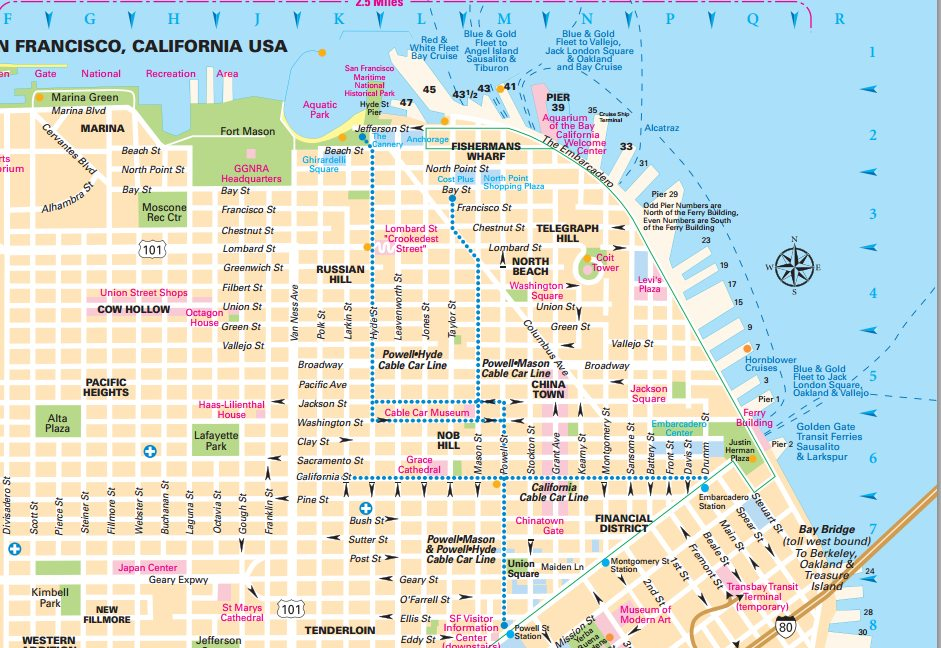
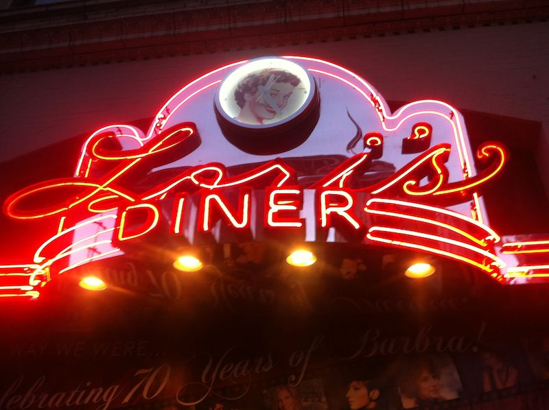

Sogeti på Java One 2012
30/9 - 4/10
Robert Olsson
Vi som åkte

Henrik Jaakkula
Borlänge

Demas Sinner
Jönköping

Robert Olsson
Umeå
San Francisco
San Francisco, Downtown
Downtown, Union square
Tenderloin
The Tenderloin is a high-crime neighborhood, particularly violent street crime such as robbery and aggravated assault.http://en.wikipedia.org/wiki/Tenderloin,_San_Francisco


Java One + Oracle Open World, 50K+

- Inte på Moscone center
- Hilton
- Park 55
- Hotel Nikko
Java Strategy Keynote
- Make the Future Java
- JavaFX -> Open source
- slutet av året
- Generellt stort fokus på JavaFX
- Java nu även på OS X och Linux ARM
- Java Embedded
Java SE 8 (Sept 2013)
- Lambda Expressions, Closures, Äntligen!!
- Project Nashorn, JavaScript i JVM, 20 ggr snabbare
- Nytt Date and Time API (JSR 310)
- JavaFX blir en del av Java
- Annotations på Javatyper (JSR 308)
- PermGen tas bort -> lättare ställa in GC
Får vänta till Java SE 9
Project Jigsaw (Modularitet i Java)
JEE 7 (April 2013)
Focus på enkelhet, produktivitet och HTML5
JEE 7 (April 2013)
- Uppdaterade specar:
JPA 2.1, EJB 3.2, CDI 1.1, Bean Validation 1.1, Servlet 3.1 NIO, JMS 2.0, JAX-RS 2.0, HSF 2.2, EL 3.0 - 4 st nya:
Java API for WebSocket (JSR 356)
JCache – Java Temporary Caching API (JSR 107)
Batch Applications for the Java Platform (JSR 352)
Java API for JSON Processing (JSR 353).
Frukost på Lori's Diner :)
|  | |
Sessions, vi hann med en hel del!
University: Architect and Design Robust Enterprise Applications for the Cloud and BeyondJava Strategy Keynote
JavaOne Technical Keynote
Why Should I Switch to Java SE 7?
Building Amazing Applications with JavaFX
Pimp Your Productivity with Git, Gerrit, Hudson, and Mylyn
What’s New in Grails 2.0?
Distributed Caching to Data Grids: The Past, Present, and Future of Scalable Java
JPA 2.1 Tips, Tricks, and Examples
Lambda: A Peek Under the Hood
Building Serious JavaFX 2 Applications
HTML5 Testing in All Browsers with Java
Bringing Mylyn to NetBeans and OSGi, Bridging Their Worlds
Extending Application Protocols and Java APIs over the Web with HTML5 WebSocket
What’s New in Servlet 3.1: An Overview
Integrate Java with Robots, Home Automation, Musical Instruments, and Kinect
Continuous Enterprise Development: Case Studies in Java EE Integration Testing
Developing Applications with Cloud Services
HTTP, WebSocket, and SPDY: Evolution of Web Protocols
Moving to the Client: JavaFX and HTML5
Mastering Java Deployment Skills
Creating a Magical User Experience
Practical Performance: Understand the Performance of Your Application
Java Community Keynote
Lunch oftast på Buzzgrounden
Mellan kl 14-15 -> Demo Ground
|
|
|
|
ORACLE Appreciation Event
Treasure Island
Americas cupbåten


Java Community Keynote
Oracle har insett vikten av ett levande Java-Community
James Gosling, AKA Javapappan
Hans sjöfarkostar styrs med en Swing-app

Brasiliens JUG
Prisades för deras arbete kring språkbarriärer och jobb med översättning
Även Londons JUG lyftes fram för initiativet ”Adopt a JSR”
Avslutning med the Hives
Howlin’ Pelle Almqvist styrde och ställde som vanligt!
Summering
- Java is back on track!
- Det händer mycket igen!
- Grymt rolig/intressant konferens!
- Får du chansen, ÅK!
- 22-26/9 2013, Jag hänger på igen! :)
Mer information
- Alla presenttioner online for free
http://www.oracle.com/javaone/index.html
- Teampark, Satsningsområde Java – Sverige
Rapport och recension av sessioner
http://goo.gl/vG2Av
- Demo... om vi hinner
http://kaazing.com/demo/